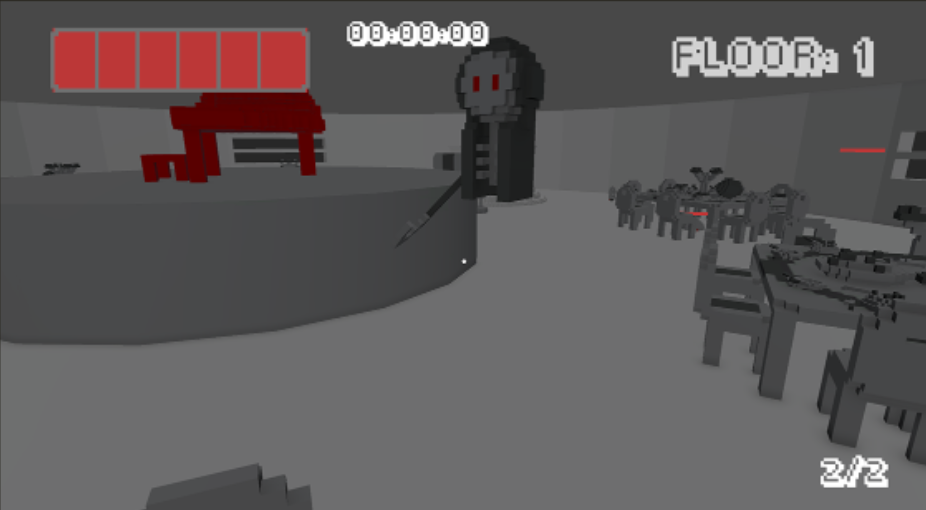

This project was carried out in a GameJam held in 2021, I made it all as Solo Dev in 2 weeks, the idea of the game is to be an Arena Shooter with roguelite elementes that takes place inside a tower with several floors.
Knowledge I used:
Game design
Level design
Project management
Game development
Nav-Mesh IA
Tools and Languages:
Unity
C#
Magica Voxel
Blender
The Idea
It was a time when I wasn`t feeling very well mentally, many things happened along with the pandemic which caused me depression among other problems, but I really wanted to participate in this Gamejam, when the theme was revealed I couldn`t be very creative, so to I started and finished this project I decided to make a style of game that I was already interested in, but using the Tower elements as a setting, this idea came mainly because of a game that I really like called "Spooky House Mansion of Jumpscares", where there are 1000 randomly generated rooms and every 100 rooms something happens.
However, in my game to be simpler it would be 10 floors, and on the tenth floor the final boss, the style of game I already wanted to do was the arena shooter inspired by "Doom" and "Quake", but I am a developer who likes of a more cute and cartoonish look, rather than realistic and detailed, so with that in mind I decided to make a game with the cutest look, even if the story behind it is macabre, just like many games I like do.
I just love this contrast between the Cute and the Macabre.
The Development
As mentioned previously, I carried out this project completely alone, as there wasn`t much of a network interested in dedicating itself to a gamejam project at that time.
I started developing the scenarios and models that were missing before actually starting development within unity, I took the weapons used from an old project, but everything else had to be done from scratch.
I had a well-defined schedule planned, the gamejam would last 2 weeks, so the schedule was more or less like this. It took more or less 3 days to model and optimize the models due to the software I used.
1 day to concept the idea and story.
5 days of development in general, inserting the models, programming the mechanics and behaviors, along with their animations.
2 days were spent creating the scenarios, the pre-arrangements of the enemies and their navigation mesh through the scenario.
3 days were spent correcting any details that were needed, but also trying to create the music and sound effects, which is the area I have the least knowledge of.
What was most complicated in this development was certainly coming up with the idea of the enemy models, and programming the entire system so that they could talk to each other without interfering with the perfomance and quality of the code, as I was still a novice, a lot about the quality of the code I still didn`t have full knowledge, which I gained as professional opportunities appeared to me.
With little knowledge I ended up looking for a lot of content, but I reached a satisfactory result, I think there were some key points that I can point out here.
knowledge of using Unity`s Nav-Mesh, how to use it in differents rooms of the game.
Instantiating scenes together, I made the main character stay in a main scene, keeping his information, just additively loading other scenes with the environment and enemies and unloadhing when necessary.
Basic AI for each enemy, each one has its own behavior.
Status upgrades depending on reward items for completing a floor.
Different movement ant types of shooting behaviors depending on the weapon used.
The Graphics and Models
The game`s graphics style follows monochrome to convey a melancholic feeling and match the theme of the story.
Furthermore, it was inspired by the film "Schindler`s List" to highlight the color red for the most important items, so all items in red are part of the mystery and are important to unravel the story and how to stop the cycle of torture.
The models were made using the Magica Voxel tool, it is a very good tool for making 3D models using cubes quickly, it makes the work easier if you don`t have time to model something from scratch.
However, the problem with this tool at the time was that because of how the texture works on top of the model, the model came with many more polygons than necesary, and the texture was just a color table image, if you want to know more I can explain better later on this page.

With the models I tried to balance enemies that are simple and walk around the map, with those that fly and shoot, and even those that have special behaviors, here are some of the enemies and their ideas.
Bomb: Starting with my favorite, it`s a very cute little bomb that walks a little funny due to it`s size, it tries to get close to you to explode, but if you kill it, it will fall and explode too.
Death: This is the classic death but without the legs, it flies and has a fast rate of fire that follws you, it ended up being a big problem for the demo due to its difficulty
Under: As there were already many enemies on the screen I thought about creating enemies that would not be on the screen either, under is a creature that walks underneath the ground until it reaches you, and when it arrives it comes out of the ground to cause damage but then return.
Conju: This is a summoner, his idea is to always try to keep as mush distance as possible from the player, while spawning a bunch of his offspring that go towards the player can make movement difficult if you step in the wrong places.
The Animations
Here are some enemies animations (Bomb's remains my favorite), to make the animations I used a mix of animations with independent parts and "Sprites" of the 3d Models.
An example of independent Parts is Bomb, where his body is separated from his feet, which makes it easier to generate this more unique animation.
For the Sprite model, the example is Conju's puppy, it has two models that were made to save a little time, one model has the leg further out, and the other further in, thus giving the impression of momentum in your animation.
The Sounds
Unfortunately the music is my most complicated part, I`m terrible at knowing whether a set of notes are pleasant or not, but I tried my best to make the music and the effects.
(At the moment I don`t remember which software I used to create them, if I find it I`will update it here)
I tried to do something more dynamic with the music but with an 8-bit feel, and it stayed that way.
The Final Result
The final result for GameJam wasn`t the most satisfactory, but I already knew it would happen as the topic wasn`t very well explored, but as I had, I wanted to do a project and I wanted to participate, so I created excitement at the time to win the depression and build the game.
I really liked it and I`m proud of this project, it was a little of my feelings and my effort in the whole project, it is one of the few games that I take to events here in Santos-SP, and many like it and praise it, so in the future when I have possible investments to make in this project, it will be one of the ones that I will complete with a team this time.
The Conclusions
It was a sensational experience creating this game in just 2 weeks, I learned and challenged myself a lot to complete it and have a beginning, middle and end, I take this project as inpiration that even in darkest moments I can rise again and work dedicatedly and overcome any challenge.
The Story
The story was very much based on my negative feelings, so it ended up being a bit macabre, the game was made almost as an outburst of everything I felt, just like psychologists ask you to write poetry to help with your emotions (Yes, I also write poetry)
The story elements are not very clear in this prologue due to time, but elements of them are still found within it.
The game represents the struggle and the attempt after attempt to end suffering, a feeling that you are in an eternal loop where nothing you do ends the cycle, but it is not true, and that is the idea of the game.
The game has a natural loop, where if you just follow the levels until the final boss the result will always be the same, but if you explore and understand what can be done differently, this loop will finally end and the player will find himself free from this cycle of suffering.
With the help of the voice in your head and the hidden secrets, you will be able to see beyond all the darkness and evil that consumes you.
The Problem with Models 3D
However, the problem with this tool at the time was that because of how the texture works on top of the model, the model came with many more polygons than necessary, and the texture was just a color table image, which made me need to run looking for a way to optimize the models and create textures in a way that I could edit without having to open Magica Voxel again.
With that I found a way to Bake a texture from one model to another model using Blender, but it was still a lot of work to do on each model, but unforunately there was no other tool for this at the time, while I was updating my portfolio I discovered who made a plugin for Blender that is two in one, in addition to optimizing the models, it also generates a new texture for it.
Contact Me
Thank you, your contact has been sent!
Sorry! Something happened and your email was not sent.
@ 2024 Akapaya. Todos os direitos reservados.
Akapaya, logotipo da Akapaya são marcas registradas de Akapaya
Arte desenvolvida por Thamires Dantas.
Design do site desenvolvido por Gregory Valentim.
Site desenvolvido por Gregory Valentim.